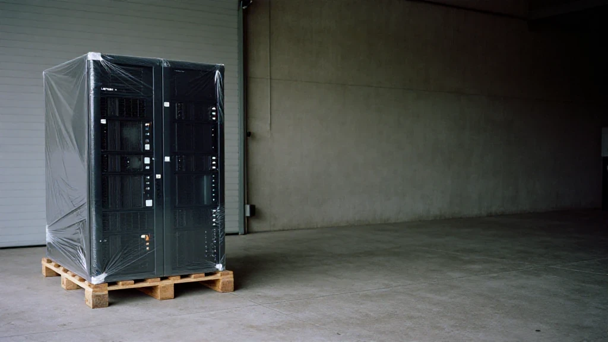
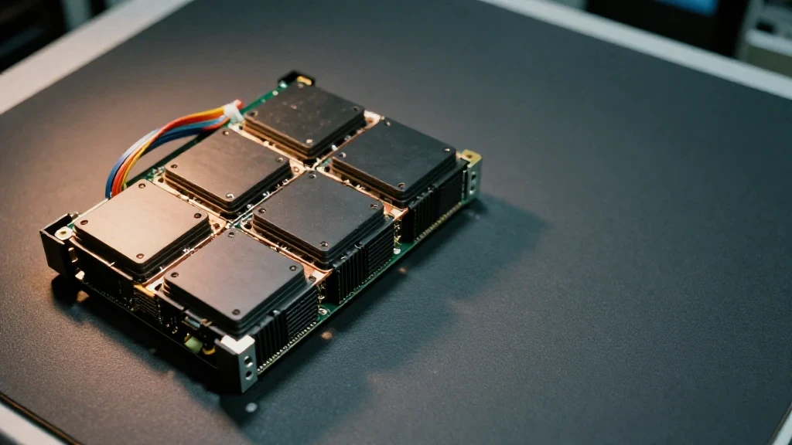
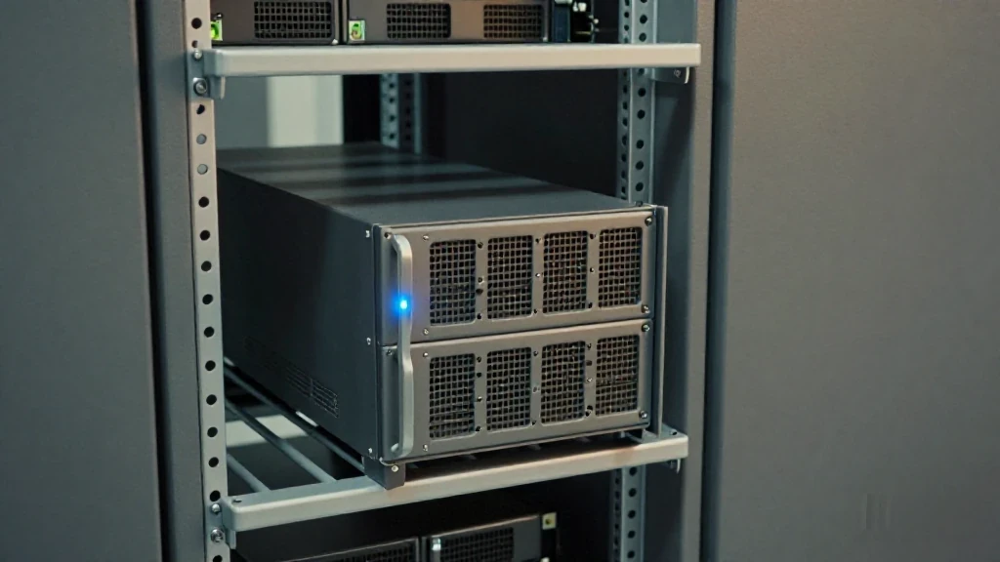
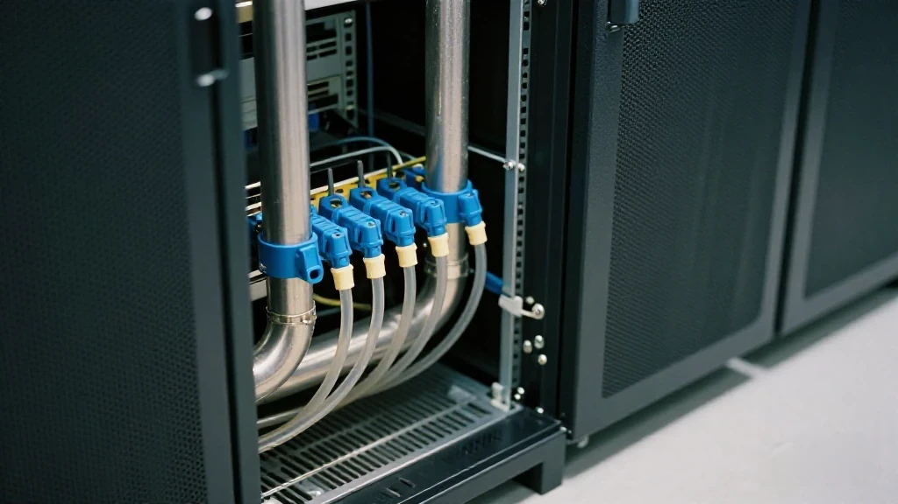
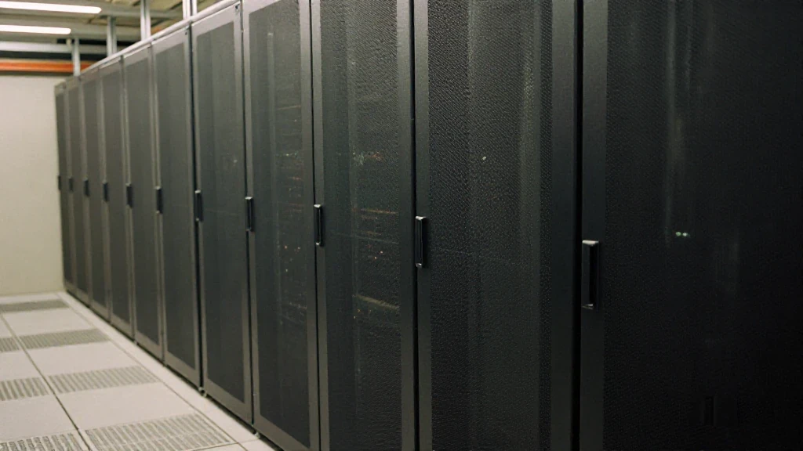

圖片由 AI輔助創作（Z-Image-Turbo）Image by AI (Z-Image-Turbo)
【鄭哥講算力】
最近算力圈嘅行情一路衝高，B300 現貨價跟住上，單機報價就差唔多要突破 2000 萬呢個關口。
呢段時間我接待咗十幾個機房採購同資方，發現一個幾普遍嘅踩坑情況：好多人只盯住「8 卡 B300」呢個核心配置，完全唔睇型號後面嗰個後綴。DGX 同 HGX，一字之差，成交價可以拉開幾十萬，甚至上百萬。一個唔小心，就多付一大筆冤枉錢。
第一幕：一個根深蒂固嘅誤區

圖片由 AI輔助創作（Z-Image-Turbo）Image by AI (Z-Image-Turbo)
圈子一直流傳一個講法：HGX 係縮水代工版，只有 DGX 才算純正原廠整機。
我做算力硬件交付咁多年，可以直白講清楚：兩者嘅 GPU 核心，冇任何閹割。無論 DGX B300 定 HGX B300，都係 8 顆 SXM B300 芯片，標配 NVSwitch 交換機同完整 NVLink 互聯通道。決定大模型訓練、集群通信效率嘅核心硬件完全一致，算力性能唔分高下。
真正拉開價差嘅，從來唔係張卡本身，而係整機出身、硬件配置、合規配額、售後體系同標準化程度。
第二幕：DGX B300——原廠全鏈路，規格鎖死

圖片由 AI輔助創作（Z-Image-Turbo）Image by AI (Z-Image-Turbo)
先拆 DGX B300。呢部係英偉達全鏈路主導設計、原廠體系交付嘅封閉整機。
整機硬件規格全部鎖死：出廠標配雙路 Intel Xeon 6776P 處理器、標配 2TB 系統內存、原廠高速 NVMe 緩存盤，搭載英偉達原生 BMC 管理系統。出廠前，英偉達已經做完 NVLink 鏈路調試、整機壓力測試，預裝 DGX 軟件棧，開箱就可以快速組建大規模集群，整機一致性拉到滿。
政企超算項目、標準化 AI 訓練集群，幾乎都會優先揀 DGX 機型。
但 DGX 最大嘅短板係貨源極度緊張。受出口管制、原廠配額、最終用戶審查、用途備案多重約束，普通企業好難拿到穩定貨源，審批門檻極高，流通貨寥寥無幾。稀缺性直接推高溢價，呢個就係 DGX 價格居高不下嘅核心原因。
第三幕：HGX B300——唔係縮水，係平台

圖片由 AI輔助創作（Z-Image-Turbo）Image by AI (Z-Image-Turbo)
再睇 HGX B300。佢唔係低配縮水版，而係英偉達對外開放嘅標準化算力板卡平台。
英偉達只輸出 B300 核心模組同高速互聯方案，剩返嘅機箱、供電、散熱、CPU、內存、網卡呢啲外圍硬件，全部交由戴爾、超微等正規 OEM 廠商自主集成定製。
硬件配置可以自由調整，部分機型同時支持風冷同液冷兩種散熱方案，可以根據推理、訓練唔同業務靈活調配。對比配置固化嘅 DGX，HGX 嘅定製自由度更高，更貼合國內機房現有嘅基建條件。
對絕大多數商用算力租賃、機房集群項目，HGX 嘅落地實用性反而更強。由 OEM 廠商集成，整機採購資質審核鏈路同原廠 DGX 唔一樣，整機定製門檻相對更低。
第四幕：避坑六項核驗標準
圖片由 AI輔助創作（Z-Image-Turbo）Image by AI (Z-Image-Turbo)
搞清兩套機型嘅定位，就睇得透當下 B300 嘅報價亂象。DGX 配額稀缺，自帶原廠合規溢價；HGX 貨源充足，性價比更高。部分渠道會刻意混淆兩個版本，把 OEM 集成嘅 HGX 當 DGX 原廠機報價，賺高額差價。好多新手盲目迷信 DGX 原廠標籤，一味追高，白白多付幾十萬採購成本。
所以核驗要落實到單項。以下六項，逐項對：
- 核對整機平台型號，嚴格區分 DGX 同 HGX。
- 核對 GPU 型號同數量（8 顆 SXM B300），NVSwitch 交換機同 NVLink 互聯通道係唔係完整。
- 確認 CPU（雙路 Xeon 6776P）、內存、儲存配置。
- 確認散熱方案（風冷／液冷）係唔係匹配機房製冷。
- 提前敲定驅動同軟件棧適配。
- 落實整機保養同備件售後鏈路。
第二項我特意擺喺前面：型號係寫喺紙上嘅，GPU 數量同互聯鏈路係要開機睇嘅。紙上面嘅嘢容易對，機入面嘅嘢才係你真正買返嚟嘅嘢。
第五幕：冇最好，只有適配

圖片由 AI輔助創作（Z-Image-Turbo）Image by AI (Z-Image-Turbo)
- DGX 適合：大型超算、統一標準化集群、嚴格原廠合規嘅政企項目
- HGX 適合：商用算力租賃、機房改造、液冷定製化部署
眼下 B300 一機難求，行情持續走高，市場虛盤越嚟越多。比起盲目比價、爭搶高價原廠貨，優先鎖定貨源清晰、配置透明、售後可落地嘅現貨，才係穩賺唔蝕嘅選擇。
算力行業走到下半場，拼嘅早已唔係邊個拿貨出價更高，而係邊個避得開採購陷阱、控得住貨源風險、保證到穩定交付。
一字之差，差嘅唔止係錢，係你知唔知自己買咗乜。
圖片由 AI輔助創作（Z-Image-Turbo）Image by AI (Z-Image-Turbo)
[Zheng Ge on Compute]
Prices across the compute market have been climbing hard, and the spot price of the B300 has climbed with them. A single machine now sits just under the 20-million mark.
Over this stretch I have sat with more than a dozen data-centre buyers and investors, and the same mistake keeps coming up: they fix their eyes on "eight B300 cards" and never read the suffix after the model number. DGX or HGX is one letter apart, and the transaction price can open by several hundred thousand, sometimes a million. One careless moment and you have overpaid by a fortune.
One: A Misconception With Deep Roots
圖片由 AI輔助創作（Z-Image-Turbo）Image by AI (Z-Image-Turbo)
The trade has long repeated one line: HGX is the stripped-down contract-built version, and only DGX is a genuine factory machine.
After years in compute hardware delivery I will put it plainly: there is no cut to the GPU core in either one. DGX B300 and HGX B300 both carry eight SXM B300 chips, both come with the NVSwitch switch and the full NVLink interconnect channels. The core hardware that decides large-model training and cluster communication efficiency is identical, and there is no gap in raw compute.
What actually opens the price gap was never the card itself. It is the machine's provenance, the hardware configuration, the compliance quota, the after-sales system and the degree of standardisation.
Two: DGX B300 — Factory End to End, Specification Locked
圖片由 AI輔助創作（Z-Image-Turbo）Image by AI (Z-Image-Turbo)
Start with DGX B300. This is a closed machine: designed under Nvidia's control across the whole chain, delivered through the factory system.
Every hardware specification is locked. It ships with dual Intel Xeon 6776P processors, 2 TB of system memory as standard, factory high-speed NVMe cache drives, and Nvidia's native BMC management system. Before it leaves the factory Nvidia has already finished the NVLink link tuning and the full-machine stress test, and pre-installed the DGX software stack. You can build a large cluster the day you open the box; machine-to-machine consistency is total.
Government and enterprise supercomputing projects, and standardised AI training clusters, will almost always take DGX first.
But DGX's great weakness is supply: it is extremely tight. Export controls, factory allocation quotas, end-user review and end-use filing all bind it at once. An ordinary company struggles to get a stable source, approval thresholds are very high, and goods actually in circulation are few. Scarcity pushes the premium up directly, and that is the core reason DGX prices stay high.
Three: HGX B300 — Not a Cut-Down Model, a Platform
圖片由 AI輔助創作（Z-Image-Turbo）Image by AI (Z-Image-Turbo)
Now HGX B300. It is not a low-spec cut-down build. It is the standardised compute-board platform Nvidia opens to the outside.
Nvidia supplies only the B300 core modules and the high-speed interconnect design. Everything around it — chassis, power, cooling, CPU, memory, network cards — is integrated and customised by proper OEM manufacturers such as Dell and Supermicro.
The hardware configuration can be adjusted freely, and some builds support both air and liquid cooling, so it can be tuned to inference or to training as the business needs. Against the fixed DGX specification, HGX offers more freedom to customise, and it fits the infrastructure a domestic data centre already has.
For the great majority of commercial compute leasing and data-centre cluster projects, HGX is the more practical machine to land. Because an OEM integrates it, the qualification and review path for buying the whole machine differs from a factory DGX, and the bar for customising a build is relatively lower.
Four: Six Checks Before You Buy
圖片由 AI輔助創作（Z-Image-Turbo）Image by AI (Z-Image-Turbo)
Once you understand where the two models sit, the current B300 pricing mess becomes easy to read. DGX quotas are scarce, so it carries a factory compliance premium. HGX supply is ample, so it is better value. Some channels deliberately blur the two and quote an OEM-built HGX at DGX factory prices, pocketing the difference. Plenty of newcomers bow to the DGX factory label, chase the higher price, and hand over several hundred thousand in cost for nothing.
So the checks have to come down to individual items. Six of them:
- Check the platform model number, and keep DGX and HGX strictly apart.
- Check the GPU model and count (eight SXM B300), and whether the NVSwitch switch and the NVLink interconnect channels are complete.
- Confirm the CPU (dual Xeon 6776P), memory and storage configuration.
- Confirm the cooling design (air / liquid) matches the data centre's own cooling.
- Settle driver and software-stack compatibility in advance.
- Nail down the whole-machine warranty and the spare-parts after-sales chain.
I put the second item near the front on purpose: the model number is written on paper, while the GPU count and the interconnect links have to be seen on the machine. Paper is easy to agree with. What is inside the chassis is what you actually bought.
Five: Nothing Is Best, Only Fitting
圖片由 AI輔助創作（Z-Image-Turbo）Image by AI (Z-Image-Turbo)
- DGX fits: large supercomputing, unified standardised clusters, government and enterprise projects with strict factory-compliance requirements
- HGX fits: commercial compute leasing, data-centre retrofits, liquid-cooled custom deployments
Right now a B300 is hard to find at any price, the market keeps climbing, and phantom offers multiply. Rather than comparing prices blindly or fighting for expensive factory stock, lock in goods whose source is clear, whose configuration is transparent and whose after-sales can actually be delivered. That is the choice you do not lose on.
The compute industry is into its second half. What decides it is no longer who can pay the most for stock, but who avoids the purchasing traps, controls supply risk and guarantees delivery.
One letter apart. What differs is not only the money — it is whether you know what you bought.